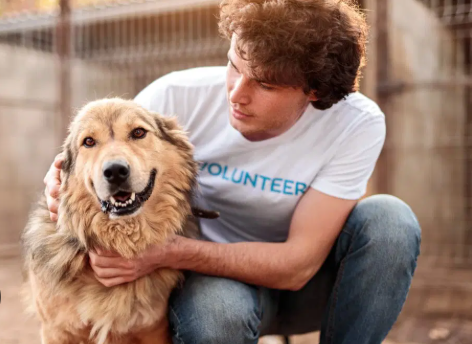
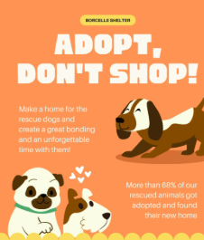
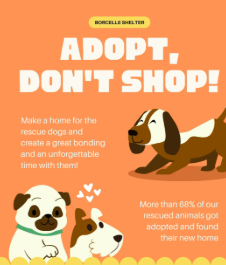
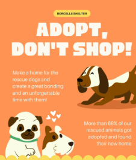
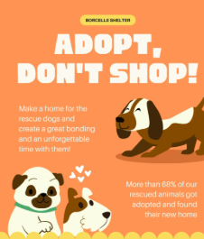

Inspirational Moments in Pet Adoption & Volunteering


 


Bridging Hearts: Connecting Loving Families with Pets in Need
We are a dedicated team of university students passionate about animal welfare. This portal is our way of making a positive impact by promoting responsible pet adoption and raising awareness about homeless animals.
To create a simple, user-friendly platform that connects potential adopters with pets in need of forever homes. We aim to reduce the number of homeless animals by encouraging adoption over buying, while educating the community on responsible pet ownership.
A world where every pet has a safe, loving home, and no animal is left behind. Through technology and compassion, we envision a future with fewer stray animals and more happy families.
Millions of healthy, loving animals enter shelters every year, waiting for a second chance. Adopting saves lives, fights puppy mills, and brings immense joy. Adopted pets often show incredible gratitude and form deep bonds with their new families.
Fun Fact: Pets can reduce stress, lower blood pressure, and improve mental health!
This project was born from our love for animals and a desire to use our web development skills for good. As students, we wanted to address a real-world issue — pet homelessness — while learning HTML, CSS, and project collaboration.
We drew inspiration from real animal shelters and adoption events, where volunteers work tirelessly to care for pets.

Lead Developer & Designer – Handled layout, CSS styling, and pet gallery features.
Content Creator & Researcher – Wrote pet descriptions, adoption tips, and educational content.
UI/UX Specialist & Tester – Ensured the site is user-friendly and responsive on all devices.
We are proud university students combining technology and compassion for animal welfare.
Here are moments from our college events that inspired us!


Browse our available pets and start your adoption journey today!
View Available Pets